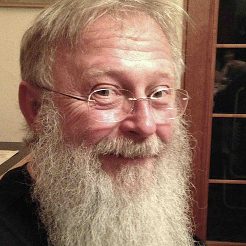
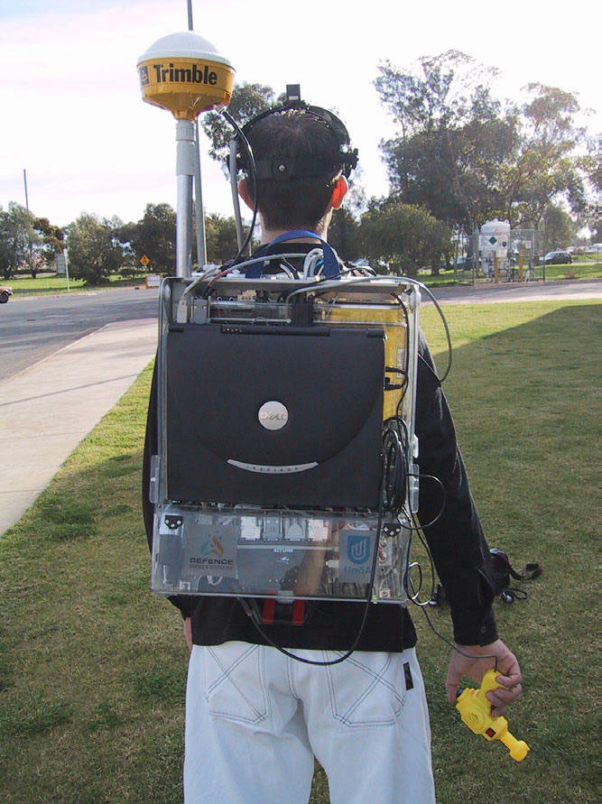

UTP Informa
Inicio
Historia
Actualidad
Desarrolladores
Aplicaciones
Historia de la Realidad Aumentada
>1968 IVAN SUTHERLAND
Fue el primero en crear un sistema el cual le permitia visualizar objetos en su entorno mediante realidad aumentada.
>1990 TOM CAUDELL
Desarrolla un prototipo el cual daria inicio a las gafas de realidad aumentada y virtual.

>1999 KATO Y MARK BILLINGHURST
Desarrollan la biblioteca que permite la creacion de tecnologia de sobreposicion de objetos virtuales en entornos reales.
>2000 ARQuake
Se lanza el primer videojuego inmersivo con el entorno.
